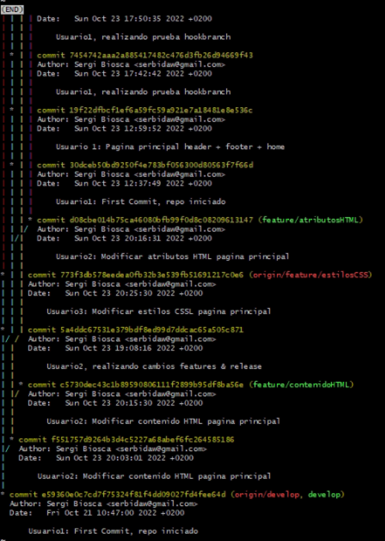

PROYECTO FINAL GIT:
SERGI BIOSCA BENEYTO 2DAW
TEORIA
-
Podríamos decir que GIT consiste en un software donde podemos controlar nuestro código fuente a través de diferentes ramas para poder tener una mejor estructura de nuestros archivos de código fuente, para así almacenar todos los cambios diarios de nuestro código del SW implementado. Git contiene diferentes comandos para realizar los cambios de una manera mas eficiente, confiable y compatible con los diferentes usuarios en línea. Donde se almacena nuestro código se dice que es un repositorio, y desde ese repositorio es donde ejecutamos los comandos para realizar los cambios correspondientes.
-
Para esta práctica vamos a utilizar la metodología git Flow, esta metodología corresponde a un modelo alternativo para crear las ramas correspondientes en Git, cuyas se utilizan de diferentes tipos. Contiene ramas de mayores confirmaciones(commits) y de más duración. Vamos a utilizar este método en este proyecto ya que tiene un ciclo de publicación programado, es decir vamos a poder asignar funciones específicas a esas ramas y poder decir cuando y como las ramas deben entrar en acción. Contiene dos ramas principales y sus ramas secundarias.
USUARIO 1
-
Usuario1, crea el repositorio(luego de añadir la estructura del proyecto boilerplate). Realizamos los siguientes pasos:
Estructura correcta del código fuente de nuestro proyecto:
El usuario1 por lo tanto inicia el repositorio y crea el primer commit y añade el repositorio remotamente:
Una vez creado el repositorio con su estructura inicial, el usuario1 inicia la metodología que vamos a utilizar para este proyecto, git Flow. La inicia con git flow init aprovechando la biblioteca de extensiones git-flow
Usuario1, incluye en el header un acceso al home y el footer de la pagina:
-
Iniciamos el servidor con localhost:1234
automáticamente se nos abrirá el navegador con la pagina principal, el usuario1 añade lo siguiente:
Usuario1 realiza el add y comit con los cambios realizados
Usuario1, realiza el proceso de crear dos hooks mediante la librería husky:
Instalación librería husky:
npm install husky, instalamos la librería. Y en npm run prepare la iniciamos:
Creación dos hooks:
Primer hook, commit rama hotfix, este comprobara que siempre exista una persona asignada para verificar que no se rompe nada. Commit deberá contener “A corregir por: …”
Creamos el archivo pre-commit husky de la siguiente manera:
Y añadimos al fichero el código para realizar que no se haga el commit si no contiene la frase deseada:
Segundo hook, este mostrará en consola un mensaje(carácter ascii) al realizar el checkout.
Creamos el archivo post-checkout husky de la siguiente manera:
Y añadimos al fichero el código para cuando se cambie de rama salga el aviso con carácter ascii por consola:
-
Usuario1, vuelve a mejorar el contenido creado por el usuario2, crea un hotfix:
Creación hotfix:
Para ello el usuario realiza un comando similar al que han realizado los otros usuarios para la feature:
git Flow hotfix start mejorasV_1_0
Con el usuario1 retoco mejoras respecto a la pagina, descripción del curso en el home y añado los cambios. En el mensaje del commit debemos poner “A corregir por”, ya que nos encontramos en la rama hotfix y el hook pre-commit esta pendiente del mensaje
El usuario1 realiza abre una pull request y realiza el merge para que se añadan los cambios a la rama main:
USUARIO 2
-
Usuario 2, tiene que crear dos features de la siguiente manera, y un hook:
Para crear la feature con la metodología git Flow debemos ejecutar el siguiente comando:
Feature nombrada Contenido html:
git Flow feature start contenidoHTML
Feature nombrada atributosHTML
git Flow feature start atributosHTML
El Usuario2 realiza un hook que será un pre-commit, este verificará el correcto formato html:
Realiza el mismo proceso a la hora de realizar el hook con la librería husky que el usuario1. En este caso nos hará falta el plugin linter que lo instala el usuario2 de la siguiente manera:
npm init @slinit/config
-
Con el usuario 2 debemos retocar el contenido HTML, por lo tanto nos cambiamos a la feature/contenidoHTML y realizamos los siguientes cambios:
El usuario2 realiza abre una pull request y realiza el merge para que se añadan los cambios a la rama main, al haber realizado unos cambios que estban en la rama main, nos dice que hay conflicto, el usuario2 resuelve el conflicto de la siguiente manera:
Usuario2, ahora retoca la parte de atributos HTML desde la feature/atributosHTML, para ello se sitúa en la rama y modifica el código, luego añade los cambios con git:
Una vez realizados los cambios, accedemos al github con el usuario2 para poder realizar el pull request y merge de los cambios actuales
USUARIO 3
-
Usuario 3, al encargarse del css de la página, también será el encargado de crear una nueva featura llamada estilosCSS y también creara una nueva reléase con todas las features v1.0:
Creación feature estilosCSS:
git Flow feature start estilosCSS
Creación release:
El usuario3 accede a su github y en su repositorio crea una nueva release de la siguiente manera
Usuario3, ahora retoca la parte de estilosCSS desde la feature/estilosCSS, para ello se sitúa en la rama y modifica el código, luego añade los cambios con git:
-
Usuario3, ahora retoca la parte de estilosCSS desde la feature/estilosCSS, para ello se sitúa en la rama y modifica el código, luego añade los cambios con git:
GIT LOG COMMITS:
